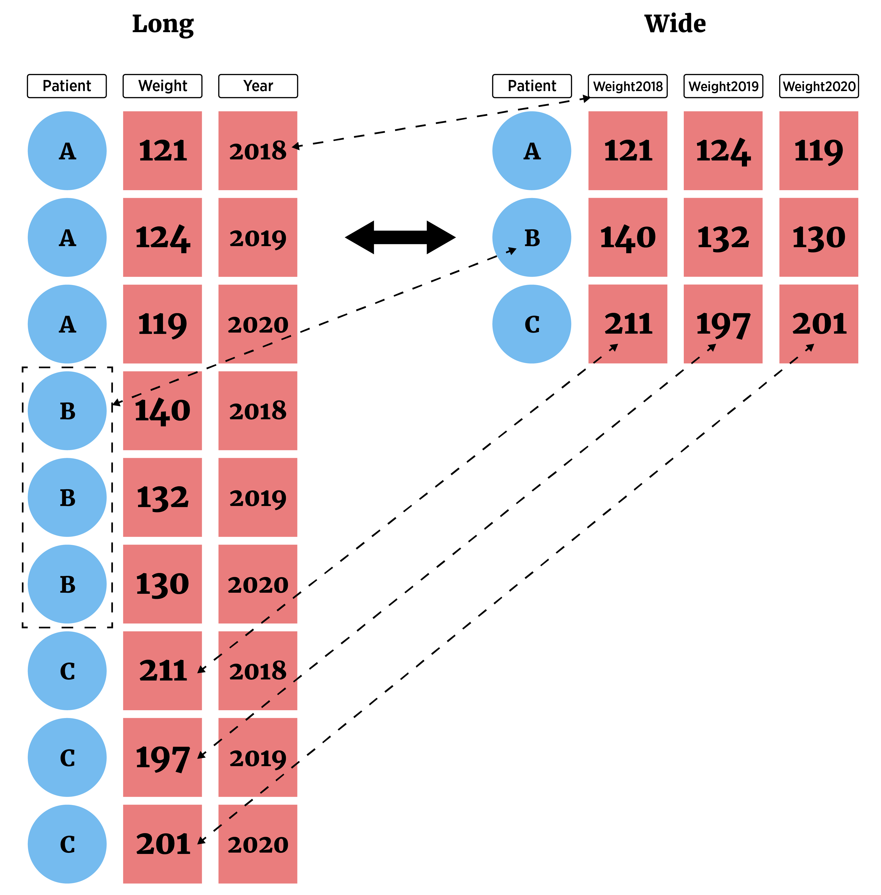

Manipulating Data with tidyr
We now have a good handle on common actions we want to take on our data frames. However, we’ve been treating our data as though it is already in long format where each row consists of one observation and each column one variable.
This isn’t always the case! Sometimes we have wide format data where we may have more than one observation in a given row.
You might see wide data if you deal with pivot tables in excel. It is often a nicer way to display data, but almost all of the plotting, summarizing, and modeling we do in statistics expects data to be in long form. Luckily, the tidyr package gives us nice functionality for switching between these two forms!
tidyr Package
This pacakge allows us to easily manipulate data via
pivot_longer()- lengthens data by increasing the number of rows and decreasing the number of columns- Most important as analysis methods often prefer this form
pivot_wider()- widens data by increasing the number of columns and decreasing the number of rows
We’ll also look at a couple other functions from tidyr that can be useful.
pivot_longer()
Consider the data set called cityTemps.txt available via the URL below.
library(readr)
temps_data <- read_table(file = "https://www4.stat.ncsu.edu/~online/datasets/cityTemps.txt")
── Column specification ────────────────────────────────────────────────────────
cols(
city = col_character(),
sun = col_double(),
mon = col_double(),
tue = col_double(),
wed = col_double(),
thr = col_double(),
fri = col_double(),
sat = col_double()
)temps_data# A tibble: 6 × 8
city sun mon tue wed thr fri sat
<chr> <dbl> <dbl> <dbl> <dbl> <dbl> <dbl> <dbl>
1 atlanta 81 87 83 79 88 91 94
2 baltimore 73 75 70 78 73 75 79
3 charlotte 82 80 75 82 83 88 93
4 denver 72 71 67 68 72 71 58
5 ellington 51 42 47 52 55 56 59
6 frankfort 70 70 72 70 74 74 79This data is in wide format as more than one observation on a city is in each row.
Switch to ‘Long’ form with
pivot_longer(). Checking the help, the major arguments are:cols= columns to pivot to longer format (cols = 2:8)
names_to= new name(s) for columns created (names_to = "day")
values_to= new name(s) for data values (values_to = "temp")
library(tidyr)
temps_data |>
pivot_longer(cols = 2:8,
names_to = "day",
values_to = "temp")# A tibble: 42 × 3
city day temp
<chr> <chr> <dbl>
1 atlanta sun 81
2 atlanta mon 87
3 atlanta tue 83
4 atlanta wed 79
5 atlanta thr 88
6 atlanta fri 91
7 atlanta sat 94
8 baltimore sun 73
9 baltimore mon 75
10 baltimore tue 70
# ℹ 32 more rowsThat’s better! Now each row has one observation in it. Recall we had a lot of functionality for selecting columns within the tidyverse. That holds here as well!
temps_data |>
pivot_longer(cols = sun:sat,
names_to = "day",
values_to = "temp")# A tibble: 42 × 3
city day temp
<chr> <chr> <dbl>
1 atlanta sun 81
2 atlanta mon 87
3 atlanta tue 83
4 atlanta wed 79
5 atlanta thr 88
6 atlanta fri 91
7 atlanta sat 94
8 baltimore sun 73
9 baltimore mon 75
10 baltimore tue 70
# ℹ 32 more rowspivot_wider()
Occasionally we’ll want to make our data wider for display purposes. We can make this switch to ‘Wide’ form with pivot_wider(). There are two major arguments we must specify:
names_from= column(s) to get the names used in the output columnsvalues_from= column(s) to get the cell values from
Let’s consider our batting data set from the dplyr notes.
library(dplyr)
Attaching package: 'dplyr'The following objects are masked from 'package:stats':
filter, lagThe following objects are masked from 'package:base':
intersect, setdiff, setequal, unionlibrary(Lahman)Warning: package 'Lahman' was built under R version 4.4.2batting_tbl <- as_tibble(Batting)
batting_tbl# A tibble: 113,799 × 22
playerID yearID stint teamID lgID G AB R H X2B X3B HR
<chr> <int> <int> <fct> <fct> <int> <int> <int> <int> <int> <int> <int>
1 aardsda01 2004 1 SFN NL 11 0 0 0 0 0 0
2 aardsda01 2006 1 CHN NL 45 2 0 0 0 0 0
3 aardsda01 2007 1 CHA AL 25 0 0 0 0 0 0
4 aardsda01 2008 1 BOS AL 47 1 0 0 0 0 0
5 aardsda01 2009 1 SEA AL 73 0 0 0 0 0 0
6 aardsda01 2010 1 SEA AL 53 0 0 0 0 0 0
7 aardsda01 2012 1 NYA AL 1 0 0 0 0 0 0
8 aardsda01 2013 1 NYN NL 43 0 0 0 0 0 0
9 aardsda01 2015 1 ATL NL 33 1 0 0 0 0 0
10 aaronha01 1954 1 ML1 NL 122 468 58 131 27 6 13
# ℹ 113,789 more rows
# ℹ 10 more variables: RBI <int>, SB <int>, CS <int>, BB <int>, SO <int>,
# IBB <int>, HBP <int>, SH <int>, SF <int>, GIDP <int>We may want to get just the data for one team (say the Pirates) and display each players number of hits across the years 2018 to 2020.
- Let’s subset the data to get just the pirates (
teamID == "PIT") - Then we’ll select only their hits and year columns (
playerID,H, andyearID) - Then we need to pivot that data set wider so that we have the year across the top (
names_from), the players as the rows, and the entries as the hits (values_from)
batting_tbl |>
filter(yearID %in% 2018:2020, teamID == "PIT") |>
select(playerID, yearID, H) |>
pivot_wider(names_from = yearID, values_from = "H")# A tibble: 96 × 4
playerID `2019` `2020` `2018`
<chr> <int> <int> <int>
1 agrazda01 2 NA NA
2 alforan01 NA 3 NA
3 anderta01 NA NA 0
4 archech01 4 NA 2
5 baronst01 2 NA NA
6 bashlty01 NA 0 NA
7 belljo02 146 44 131
8 bostich01 NA NA 0
9 braulst01 14 0 3
10 brubajt01 NA 0 NA
# ℹ 86 more rowsGreat! You can see that missing values are filled in for those that didn’t play in a given year. Let’s subset this to remove any rows with missing values (so we only get players that played for the pirates in all three years).
The tidyr function drop_na() does this exact thing for us!
batting_tbl |>
filter(yearID %in% 2018:2020, teamID == "PIT") |>
select(playerID, yearID, H) |>
pivot_wider(names_from = yearID, values_from = "H") |>
drop_na()# A tibble: 17 × 4
playerID `2019` `2020` `2018`
<chr> <int> <int> <int>
1 belljo02 146 44 131
2 braulst01 14 0 3
3 burdini01 0 0 0
4 crickky01 0 0 0
5 felizmi01 0 0 0
6 fraziad01 154 48 88
7 holmecl01 0 0 0
8 kelake01 0 0 0
9 moranco01 129 44 115
10 musgrjo01 8 0 5
11 neverdo01 0 0 0
12 newmake01 152 35 19
13 osunajo01 69 16 24
14 polangr01 37 24 117
15 rodriri05 0 0 0
16 stallja01 50 31 8
17 willitr01 6 0 5Let’s also remove those with 0 hits:
batting_tbl |>
filter(yearID %in% 2018:2020, teamID == "PIT", H > 0) |>
select(playerID, yearID, H) |>
pivot_wider(names_from = yearID, values_from = "H") |>
drop_na()# A tibble: 7 × 4
playerID `2019` `2020` `2018`
<chr> <int> <int> <int>
1 belljo02 146 44 131
2 fraziad01 154 48 88
3 moranco01 129 44 115
4 newmake01 152 35 19
5 osunajo01 69 16 24
6 polangr01 37 24 117
7 stallja01 50 31 8The column names 2018, 2019, and 2020 are non-standard names as they start with a number. That’s not ideal so let’s rename those too!
batting_tbl |>
filter(yearID %in% 2018:2020, teamID == "PIT", H > 0) |>
select(playerID, yearID, H) |>
pivot_wider(names_from = yearID, values_from = "H") |>
drop_na() |>
rename('year2018' = `2018`,
'year2019' = `2019`,
'year2020' = `2020`)# A tibble: 7 × 4
playerID year2019 year2020 year2018
<chr> <int> <int> <int>
1 belljo02 146 44 131
2 fraziad01 154 48 88
3 moranco01 129 44 115
4 newmake01 152 35 19
5 osunajo01 69 16 24
6 polangr01 37 24 117
7 stallja01 50 31 8Would be better with actual player names (we’ll learn about how to combine this data set with another one that has their actual names soon!)
batting_tbl |>
filter(yearID %in% 2018:2020, teamID == "PIT", H > 0) |>
select(playerID, yearID, H) |>
pivot_wider(names_from = yearID, values_from = "H") |>
drop_na() |>
rename('year2018' = `2018`,
'year2019' = `2019`,
'year2020' = `2020`) |>
dplyr::inner_join(select(People, playerID, nameFirst, nameLast)) |>
select(nameFirst, nameLast, everything())Joining with `by = join_by(playerID)`# A tibble: 7 × 6
nameFirst nameLast playerID year2019 year2020 year2018
<chr> <chr> <chr> <int> <int> <int>
1 Josh Bell belljo02 146 44 131
2 Adam Frazier fraziad01 154 48 88
3 Colin Moran moranco01 129 44 115
4 Kevin Newman newmake01 152 35 19
5 Jose Osuna osunajo01 69 16 24
6 Gregory Polanco polangr01 37 24 117
7 Jacob Stallings stallja01 50 31 8Column Manipulations with tidyr
- Separate a column using
separate_wider_delim()(a few other variants exist as well) - Combine two columns with
unite()

- Consider data set on air pollution in Chicago
chicago_data <- read_csv("https://www4.stat.ncsu.edu/~online/datasets/Chicago.csv")Rows: 1461 Columns: 11
── Column specification ────────────────────────────────────────────────────────
Delimiter: ","
chr (3): city, date, season
dbl (8): X, death, temp, dewpoint, pm10, o3, time, year
ℹ Use `spec()` to retrieve the full column specification for this data.
ℹ Specify the column types or set `show_col_types = FALSE` to quiet this message.chicago_data# A tibble: 1,461 × 11
X city date death temp dewpoint pm10 o3 time season year
<dbl> <chr> <chr> <dbl> <dbl> <dbl> <dbl> <dbl> <dbl> <chr> <dbl>
1 3654 chic 1/1/1997 137 36 37.5 13.1 5.66 3654 winter 1997
2 3655 chic 1/2/1997 123 45 47.2 41.9 5.53 3655 winter 1997
3 3656 chic 1/3/1997 127 40 38 27.0 6.29 3656 winter 1997
4 3657 chic 1/4/1997 146 51.5 45.5 25.1 7.54 3657 winter 1997
5 3658 chic 1/5/1997 102 27 11.2 15.3 20.8 3658 winter 1997
6 3659 chic 1/6/1997 127 17 5.75 9.36 14.9 3659 winter 1997
7 3660 chic 1/7/1997 116 16 7 20.2 11.9 3660 winter 1997
8 3661 chic 1/8/1997 118 19 17.8 33.1 8.68 3661 winter 1997
9 3662 chic 1/9/1997 148 26 24 12.1 13.4 3662 winter 1997
10 3663 chic 1/10/1997 121 16 5.38 24.8 10.4 3663 winter 1997
# ℹ 1,451 more rowsAlthough we saw that we should treat date variables as
dateobjects (say fromlubridate), we could manually separate out the dates we see here. We can notice that the month comes first followed by a/, then the day, a/, and the year.We can split on the delimiter
/The arguments to give
separate_wider_delim()are:cols= the columns we wantdelim= the delimiternames= new names for the split variablescols_remove- binary, whether to remove the original column or not
chicago_data |>
separate_wider_delim(cols = date,
delim = "/",
names = c("Month", "Day", "Year"),
cols_remove = FALSE)# A tibble: 1,461 × 14
X city Month Day Year date death temp dewpoint pm10 o3 time
<dbl> <chr> <chr> <chr> <chr> <chr> <dbl> <dbl> <dbl> <dbl> <dbl> <dbl>
1 3654 chic 1 1 1997 1/1/1997 137 36 37.5 13.1 5.66 3654
2 3655 chic 1 2 1997 1/2/1997 123 45 47.2 41.9 5.53 3655
3 3656 chic 1 3 1997 1/3/1997 127 40 38 27.0 6.29 3656
4 3657 chic 1 4 1997 1/4/1997 146 51.5 45.5 25.1 7.54 3657
5 3658 chic 1 5 1997 1/5/1997 102 27 11.2 15.3 20.8 3658
6 3659 chic 1 6 1997 1/6/1997 127 17 5.75 9.36 14.9 3659
7 3660 chic 1 7 1997 1/7/1997 116 16 7 20.2 11.9 3660
8 3661 chic 1 8 1997 1/8/1997 118 19 17.8 33.1 8.68 3661
9 3662 chic 1 9 1997 1/9/1997 148 26 24 12.1 13.4 3662
10 3663 chic 1 10 1997 1/10/19… 121 16 5.38 24.8 10.4 3663
# ℹ 1,451 more rows
# ℹ 2 more variables: season <chr>, year <dbl>Nice! These are character strings so we might want to turn them into numbers but, again, we’d really want to use date type data for these anyway.
unite()allows us to combine two columns into one- Perhaps we want a new column with the date and the season together (for display purposes)
- We just pass
unite()the name of the new column (col =), the columns we want to combine, and the separator to use (sep =)
chicago_data |>
unite(col = "season_date", season, date, sep = ": ") |>
select(season_date, everything())# A tibble: 1,461 × 10
season_date X city death temp dewpoint pm10 o3 time year
<chr> <dbl> <chr> <dbl> <dbl> <dbl> <dbl> <dbl> <dbl> <dbl>
1 winter: 1/1/1997 3654 chic 137 36 37.5 13.1 5.66 3654 1997
2 winter: 1/2/1997 3655 chic 123 45 47.2 41.9 5.53 3655 1997
3 winter: 1/3/1997 3656 chic 127 40 38 27.0 6.29 3656 1997
4 winter: 1/4/1997 3657 chic 146 51.5 45.5 25.1 7.54 3657 1997
5 winter: 1/5/1997 3658 chic 102 27 11.2 15.3 20.8 3658 1997
6 winter: 1/6/1997 3659 chic 127 17 5.75 9.36 14.9 3659 1997
7 winter: 1/7/1997 3660 chic 116 16 7 20.2 11.9 3660 1997
8 winter: 1/8/1997 3661 chic 118 19 17.8 33.1 8.68 3661 1997
9 winter: 1/9/1997 3662 chic 148 26 24 12.1 13.4 3662 1997
10 winter: 1/10/1997 3663 chic 121 16 5.38 24.8 10.4 3663 1997
# ℹ 1,451 more rowsRecap!
pivot_wider()&pivot_longer()great for reshaping dataunite()&separate_wider_*()nice for dealing with columns
Use the table of contents on the left or the arrows at the bottom of this page to navigate to the next learning material!